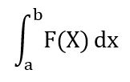

Regla del Trapecio
En matemática la regla del trapecio es un método de integración
numérica, es decir, un método para calcular aproximadamente el valor
de la integral definida
La regla se basa en aproximar el valor de la integral de f(x) por el de la función lineal que pasa a través de los puntos (a, f(a)) y (b, f(b)). La integral de ésta es igual al área del trapecio bajo la gráfica de la función lineal. Se sigue que
|  |
representa el área de la región delimitada por la gráfica de f y el eje x, desde x=a hasta x=b. Primero se divide el intervalo [a,b] en n subintervalos, cada uno de ancho
Después de realizar todo el poceso matemático se llega a la siguiente fórmula:
Donde h = (b-n)/n, y n es el número de divisiones.
La expresión anterior también se puede escribir como:
Y ahora sustituimos en la formula
y nos queda:
Aquí puedes descargar el Código, el cual fue desarrollado en el lenguaje de Python, si tu computadora no tiene descargado algún compilador compatible con el lenguaje puedes ir a nuestra sección de como descargar el compilador que recomendamos para su uso.
Presiona el link para descargar el algoritmo.
*** Regla del Trapecio ***